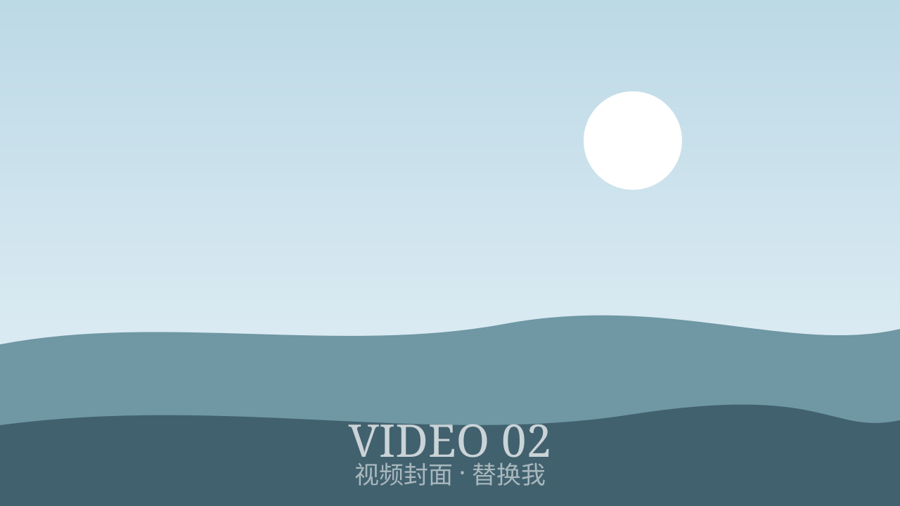
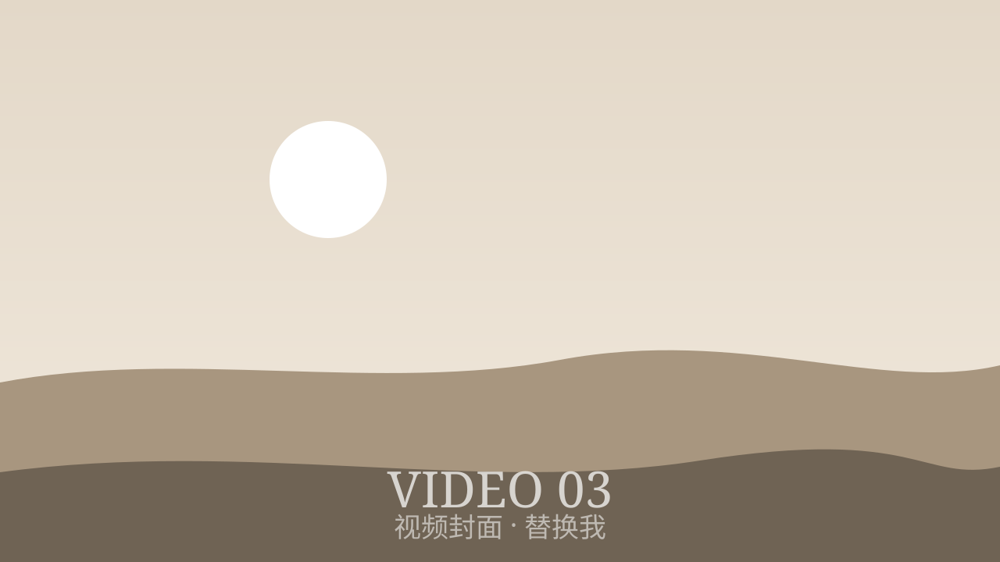

华嘉言的摄影作品集
影像创造者
关于我
我是……（在这里写你的故事：你从哪里来、为什么喜欢影像、你平时拍什么。）
目前就读 AP 项目，预计 2028 年毕业。我的梦想是进入加州的高校深造，最理想的目的地是南加州大学（USC）。
学校
广东碧桂园学校
摄影
自学 · 2020 起
专业
传媒 / 经济（待定）
影像之路
点击下方时间线的节点，看看我每一步是怎么走过来的。
摄影作品
镜头是我观察世界的方式。下面是一些我用相机记录的片段。
视频作品
相比静态照片，我更擅长用动态影像讲故事——从学校宣传片到个人活动纪录片。
学校活动宣传
纪录片

跨年片
从 2022 年起，每年一部，总结这一年的影像。

2022
2023
2024
2025